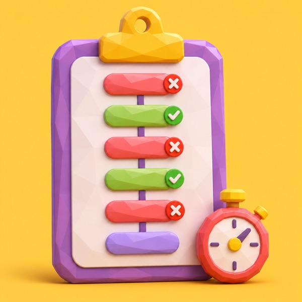
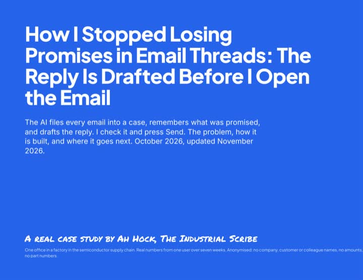

A factory office has many paths. Some people plan. Some fix. Some check. Some lead. I see eight kinds of people here. Which one is yours?
🔥The Firefighterfixes it fast🔍The Inspectorchecks it twice🔧The Fixerknows who to call🤝The Diplomatkeeps the peace🗓️The Plannersees weeks ahead📋The Auditorkeeps the records🧭The Captainmoves the team🌱The Mentorgrows the people
Not sure yet? Good. I have a test that can help you with this.
The test
Which Insider are you?
12 quick taps and one last question. About one minute. No wrong answers. Then this page talks to you, not to everybody.
I read you one line at a time. You tell me how much it sounds like you.
1 of 12
Not meThat is me
👆Tap a circle
👆Tap one
A one-minute mirror for your work habits, written by a factory office worker, not a psychologist.
✓ All answered
Your type is ready.
One step: type your email to see it.
🎯 Your type opens right here, the moment you press the button.
📄 Your full report opens with one tap. It is yours to keep.
✉️ You also get one real AI move a week from Ah Hock's desk. No spam, unsubscribe anytime.
The email box did not load (an ad blocker can do this).
Give me a moment
Setting this page up for you…
Hold on. I am changing the page to fit how you work.
Reading your answers
Finding your path in the factory
Rewriting this page for your type
Choosing the tool that fits you
You are
★ AI Native You want to change how your factory works, not only get through the day.
What you just caught has a name. Waste is anything your customer would not pay for. Every factory has the same eight kinds. They hide in the office too.
⏳WaitingThe job sits. Nobody touches it.waiting
🚚Moving thingsThe part travels. It gets no better.transport
🚶Walking, searchingYou walk around to find the tool.motion
📦Too much stockPiles of parts nobody asked for yet.inventory
🏭Making too muchMaking 100 when the order says 60.overproduction
✨Doing too muchPolishing where nobody will look.overprocessing
❌MistakesMake it wrong. Make it again.defects
💡Unused brainsThe person who knows is never asked.unused skills
5S
5S: a tidy place shows the problem.
Five small steps. When every tool has a home, you see at once what is missing or wrong.
🔧🔨🪛📏✂️🥤📰🍌🗑️Mon ✓Tue ✓Wed ✓Thu ✓
👆Tap a step
A messy bench. Where is the spanner?
Lean
Lean: take the waste out first.
Lean means doing only the steps your customer pays for. Take the waste out first. Only then bring in a machine or an AI.
Order comes inWait for a signatureCut the partMove it to the storeSearch for the drawingPut it togetherShip it
7 steps. The red ones add nothing.
Then find the real cause. Ask "why?" again and again.
The report is late.
Why?The numbers come in late.
Why?Someone types them in by hand.
Why?The two systems do not talk to each other.
That is the real cause. Fix that, not the person.
Made-up examples, to show the idea. Your own work will look different.
So, what does Agentic AI in a factory look like?
Like this. An AI that asks where the time goes, then digs and drafts with you. You always press the button. I put mine into two folders. Pick one.
One real back-office move per week, from Ah Hock's desk. Sign up and your first email brings the free 10-point Pre-Ship Checklist, and you'll hear first when a new item lands in the shop. No spam, unsubscribe anytime.
The tool does the job. This is the story behind it: what went wrong in a real factory, what we changed, and the real numbers. Two PDFs from one factory office, and each one says what was never measured. What's inside each one ↓
How I Stopped Losing Promises in Email Threads
For the boss who needs proof, or the person who wants to build their own.
I kept losing what I promised in emails. This is how I fixed it. 28 pages, with real numbers from one person over seven weeks.
Most of these work in any AI chat, even a free one. The Claude Code versions, and Workflow Swimlanes, need Claude Pro (USD 20 a month, paid to Anthropic). No refunds, so please read what each one can and cannot do before you buy.
Your table, your email thread, the task you redo every Friday. Paste it into the AI chat you already use, free plans included, or drop it into Claude Code.
It asks, then drafts.
Who decides. What was promised. Where the minutes go. Then the proposal, the reply or the waste map, built from your own numbers. Gaps are marked for you to check, never invented.
You check. You decide.
Nothing sends itself. Anything that commits the company stays a human click. That is the rule in every solution here.
Every solution starts by asking. Here is The Lean Machine at work: it asks like a sharp improvement consultant, one question at a time, until every step has a number.
Copy one box into any AI chat. ChatGPT, Claude or Gemini, free plans included. Or drop the folder into Claude Code and say lean machine.
Your factory first. A short read of your business nature, which says where waste costs your kind of factory most.
One piece of work, until it is all on the table. Who, which system, what gets retyped, minutes, who waits. Then the waste map, the 5S check, the real cause, the cuts, and your one-page Lean Plan.
Any AI chat · The Lean Machine box● pasted
you(the box, pasted) Let's hunt the Monday report.
aiFirst, your factory. What do you make or supply, and for which sectors?
youSheet-metal parts for other factories. Repeat batches.
aiIs there a written SOP for the Monday report?
youNo. It's in my head.
aiNoted as a finding: knowledge in one head is a risk. Now walk me through it, trigger to hand-over. What starts it?
youFriday 5pm I export WIP from the ERP, then copy it into last week's Excel.
aiCopying into last week's file: roughly how many minutes, and how many times a week?
youAbout 40 minutes. Once a week, twice if someone asks for a redo.
aiThat is retyping data that already exists, plus rework. Marked. What happens just after the copy?
Shortened. The questions are the tool's real ones; the answers are an example, not a customer.
What lands in your hands.
Not software to manage. Documents you can act on, built from your own numbers.

The waste map
You give: one task, step by step. You get: every step tagged, hours per month, and what to cut first. Agentic AI: The Lean Machine
The build guide
You give: the step you will automate first. You get: what to prepare, the exact prompt or steps, a test on one real case, the updated SOP. Agentic AI: The Lean Machine
The deck
You give: the table and who is in the room. You get: 3 to 5 slides with takeaway titles, the right chart each, the ask with a date. Agentic AI: Visualize to Persuade
The so-what dashboard
You give: weekly figures and your action rules. You get: an ACT TODAY band, and a tile per measure that says who does what. Agentic AI: Visualize to Persuade
Also here, Agentic AI: Email Assistant turns a 15-email customer chain into a catch-up, a rules check and a reply you can send. Workflow Swimlanes draws your Claude Code automation and what it actually did. Every file ends with its honest limits, and nothing commits the company without a human click.
Real case studies.
Not blog posts. Two real stories from one factory office in the semiconductor supply chain. Each PDF tells you what went wrong, what was done about it, the real numbers, and what is still not known. No company names, no customer names, no prices, no part numbers. USD 18.99 each, yours to keep.

Case study 01 · 28 pages
How I Stopped Losing Promises in Email Threads
What went wrong
A lot of email came in. Most of it was only copied to me. A promise was made in one email. Then the email went quiet, and the promise got lost. Sometimes the same question got answered two times.
What I did
Now every email goes into a case. A case is like one folder for one topic. It remembers what was promised, who must do it, and by when. The AI writes the reply first. I read it. I press Send. It never sends by itself.
What happened
124 cases looked after in seven weeks
583 to-dos finished, 289 of them within one day
291 replies written for me to check and send
What I still don't know
This is one desk, not many offices. I count how long an email waits for an answer. I have not yet shown if that wait is getting shorter.
What's in the PDF
The problem, told simply
How it is built, with one real case walked from start to end
Which steps the computer does alone, and which steps the AI does
Six honest tests: did it work? And what to fix next
Building So-What Reports: Every Number Says What to Do Next
What went wrong
The office made lots of reports. The numbers were right. But the boss looked, said "okay, noted", and nothing happened. The report showed a number. It did not say what to do.
What I did
I made every report answer one question: "So what do we do next?" The computer does all the sums, so no number is a guess. Every title says what the number proves. If nobody uses a page, it goes in the bin.
What happened
856,850 factory steps turned into 10 customer slide decks and 5 shop slide decks
99.64% the same as a trusted report, checked on 39,222 steps
3 spreadsheets became one shared page
What I still don't know
I never counted how many times a report changed a decision. I never measured the time saved. So the PDF does not claim them.
What's in the PDF
The three reports I rebuilt
One real example: a number that looked bad, but was not
Eight rules, each one learned from a real mistake
Six honest tests: did it work? And what to fix next
After you pay, you go straight to your download page. Bookmark it. No refunds, so please read what each case study covers above before you buy.
Questions.
What do I need?
For the paste-box versions: any AI chat, ChatGPT, Claude or Gemini, free plans included, and 30 to 45 minutes with one real piece of work in front of you. For the Claude Code versions and for Workflow Swimlanes: Claude Pro (USD 20/month, from claude.com) with Claude Code installed.
Is it really one payment?
Yes. Each item is paid once and kept, with every update free. Claude Pro, if you use it, is separate and paid to Anthropic. There are no credits and nothing to subscribe to here.
Will it save me hours?
Nobody honest can promise that. The Lean Machine estimates hours from your own answers and tells you to time the work before and after. The case studies say up front what was never measured.
Do I need to be technical?
No. Everything here was built by a non-technical factory office worker. If you can copy a box of text into a chat and answer one question at a time, you are qualified.
Is my company data safe?
The paste-box versions run inside whichever AI chat you choose, under that provider's rules. The Claude Code versions run on your own computer through your own Claude account. Nothing reaches The Industrial Scribe. Follow your company's rules on putting work information into AI tools; placeholders like "Customer A" work just as well.
What if it doesn't work for me?
There is no refund guarantee: these are downloads you keep. Each page states its honest limits, so read them first. If a file will not open or run, reply to your receipt and a human answers, usually within a day.
What happened to the Back-Office kit?
It is no longer sold. If you bought it, your download page still works and its updates are still free. Lost the link? Reply to your receipt, or email from the address you bought with.
Is this made by Anthropic?
No. The Industrial Scribe is an independent one-person publication. It works with Claude and is not affiliated with or endorsed by Anthropic.